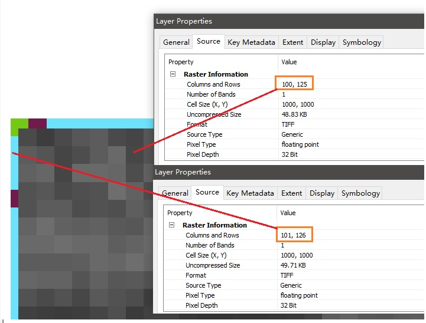
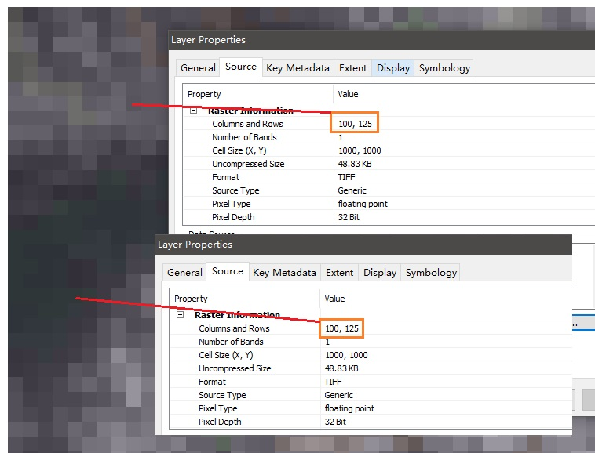

在处理栅格数据时，尽管用同一个矢量文件裁剪栅格数据，不同数据来源的栅格行列数也会出现不一致的情况。如果忽略或解决不好，会导致后续数据处理出现意想不到的误差或错误，尤其是利用编程实现数据处理时。因此，应当首先对栅格行列不一致的数据进行匹配处理，以降低出现BUG的风险。
本文利用Python算法实现栅格数据行列匹配，通过案例说明算法的有效性，并附算法源码。
（实现方法其实很简单~）
思路：
算法实现如下
其中栅格数据的读取和输出程序可参考：栅格图像补偿简单处理方法，算法依赖库：GDAL in Python
# -*- coding: utf-8 -*-importsysimportnumpydefDataMacth(in_base_raster, in_mtc_raster, out_raster, rc=[0,0,0,0]):''':param in_base_raster::param in_mtc_raster::param out_raster::param rc: <up, down, left, right>:return:'''# 读取基准栅格数据与待匹配栅格数据及其属性参数r_in_mtc=ReadRaster(in_mtc_raster)r_in_base=ReadRaster(in_base_raster)mtcdata=r_in_mtc.datanCols=r_in_base.nColsnRows=r_in_base.nRowsgeoTrans=r_in_base.geotranssrs=r_in_base.srsNDV=r_in_mtc.noDataValue# 新建与基准栅格数据行列一致的空矩阵data_new=numpy.zeros((nRows, nCols))# 根据指定的行列数进行增添与删减处理forminrange(nRows):forninrange(nCols):if(m < rc[0]orm > nRows-rc[1]-1)or(n < rc[2]orn > nCols-rc[3]-1):data_new[m][n]=NDVelse:data_new[m][n]=mtcdata[m-rc[0]][n-rc[2]]# 输出栅格数据WriteGTiffFile(out_raster, nRows, nCols, data_new, geoTrans, srs, NDV, gdal.GDT_Float32)("\tSave as: %s"%out_raster)
调用方法与案例：
上述算法函数中的参数之一rc是一个数组类型的参数，即指定的行数或列数，四个数组元素分别表示“up”, “down”, “left”, “right”四个方位
例如：[-1, 0, 0, 0]表示数据上方减去一行。
具体调用方式如下
1 2 3 4 5 6 7 | if __name__ == "__main__": rootdir = <input data direction> in_base_raster = rootdir + os.sep + r"in_base_raster.tif" in_mtc_raster = rootdir + os.sep + r"in_mtc_raster.tif" out_raster = rootdir + os.sep + r"out_raster.tif" rc=[-1, 1, 0, 0] DataMacth(in_base_raster, in_mtc_raster, out_raster, rc=rc) |
案例：
匹配前，基准栅格100 x 125，待匹配栅格101 x 126，像元数值与空间位置均不匹配。
rc = [0, -1, 0, -1]

程序执行后，基准栅格100 x 125，待匹配栅格100 x 125，像元数值与空间位置香匹配。

Fighting, GISer!
最新博文